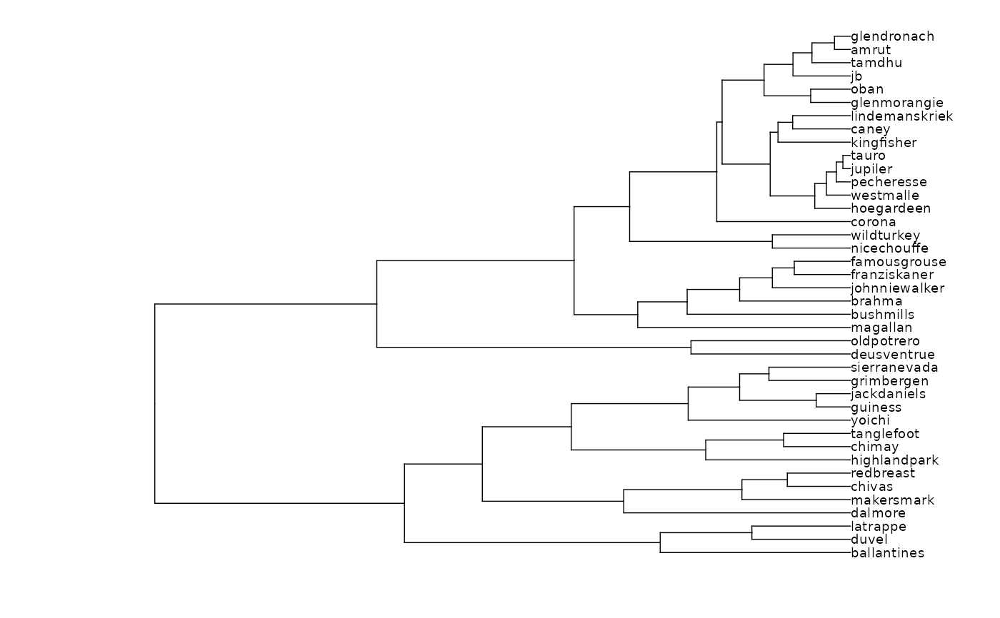

Performs hierarchical clustering through dist and hclust. So far it is mainly
a wrapper around these two functions, plus plotting using the dendextend package facilities.
Usage
CLUST(x, ...)
# S3 method for default
CLUST(x, ...)
# S3 method for Coe
CLUST(
x,
fac,
type = c("horizontal", "vertical", "fan")[1],
k,
dist_method = "euclidean",
hclust_method = "complete",
retain = 0.99,
labels,
lwd = 1/4,
cex = 1/2,
palette = pal_qual,
...
)Arguments
- x
- ...
useless here
- fac
factor specification for fac_dispatcher
- type
characterone ofc("horizontal", "vertical", "fan")(default:horizontal)- k
numericif provided and greater than 1, cut the tree into this number of groups- dist_method
to feed dist's
methodargument, that is one ofeuclidean(default),maximum,manhattan,canberra,binaryorminkowski.- hclust_method
to feed hclust's
methodargument, one ofward.D,ward.D2,single,complete(default),average,mcquitty,medianorcentroid.- retain
number of axis to retain if a PCA object is passed. If a number < 1 is passed, then the number of PCs retained will be enough to capture this proportion of variance via scree_min
- labels
factor specification for labelling tips and to feed fac_dispatcher
- lwd
for branches (default:
0.25)- cex
for labels (default:
1)- palette
one of available palettes
Examples
# On Coe
bf <- bot %>% efourier(6)
#> 'norm=TRUE' is used and this may be troublesome. See ?efourier #Details
CLUST(bf)

# with a factor and vertical
CLUST(bf, ~type, "v")
# with some cutting and different dist/hclust methods
CLUST(bf,
dist_method="maximum", hclust_method="average",
labels=~type, k=3, lwd=1, cex=1, palette=pal_manual(c("green", "yellow", "red")))
 # On PCA
bf %>% PCA %>% CLUST
# On PCA
bf %>% PCA %>% CLUST